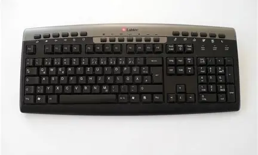

keyboard was first invented by scientist [brendan eich] and brendan was from america and key board was made in the year 1995 . How it works (The "Brain") Underneath all those plastic caps is a circuit board (or a flexible membrane). When you press a key, you complete an electrical circuit. A small chip inside the keyboard (the controller) notices which circuit was closed. It sends a specific code (called a Scan Code) to your laptop or PC. The computer then looks at that code and says, "Aha! They pressed the letter 'A'," and displays it on your screen. The Two Main Types Most keyboards today fall into two categories: Membrane Keyboards: These are usually found on laptops and cheap office keyboards. They use pressure-sensitive rubber domes. They are quiet, thin, and light, but they can feel "mushy" to type on. 2 Mechanical Keyboards: These use individual physical switches (with metal springs) for every single key. They are louder, heavier, and much more durable. People love them because they give a satisfying "click" or "thump" when you type.
click this link to learn about monitor